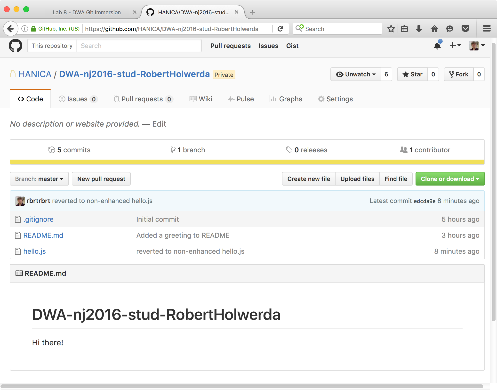
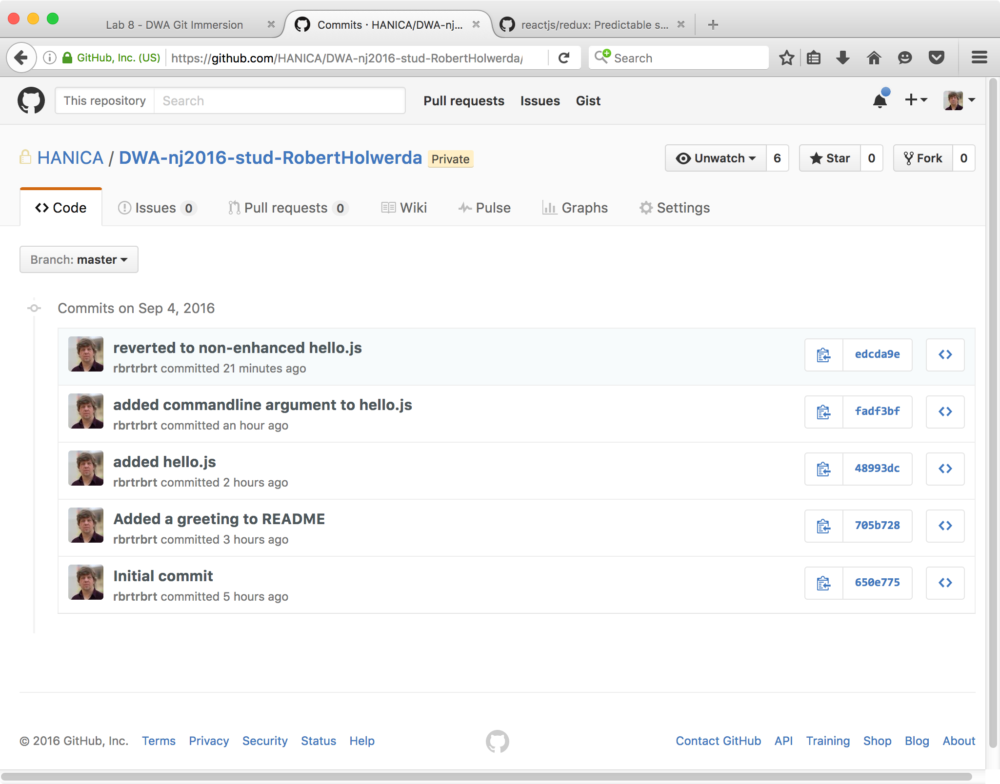
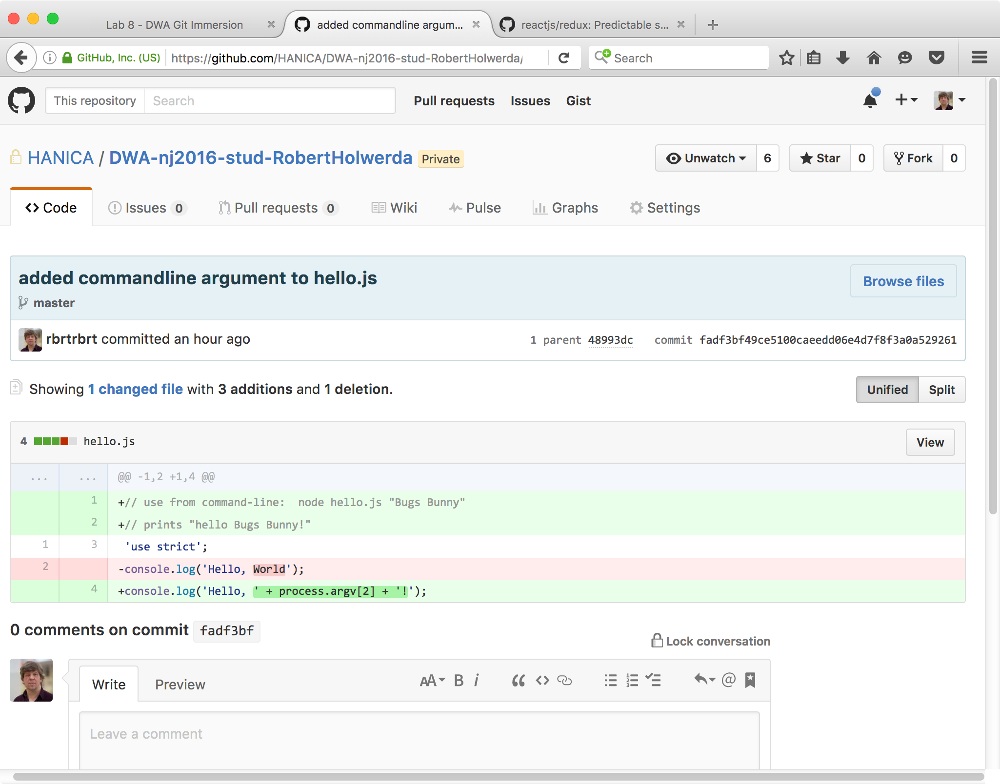
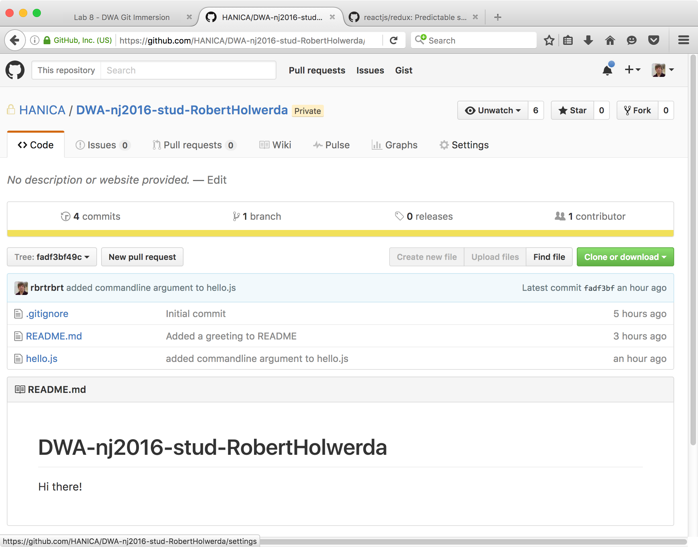
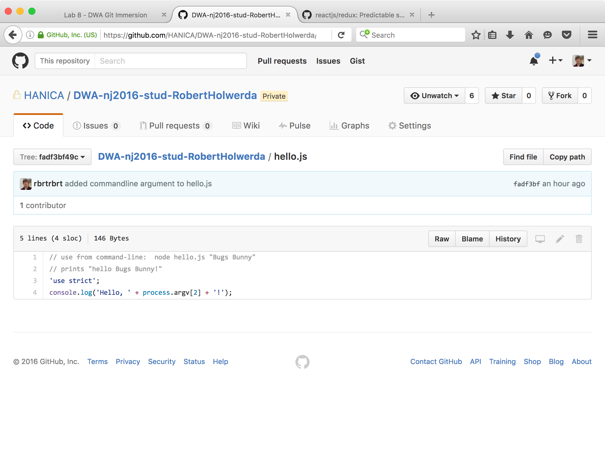

lab 8 Stage, commit and push
Goals
- Get the Github URL for a specific commit.
- Look at the way files have been in previous commits.
Prepare01
Make sure you've completed the steps in the previous lab.
Navigate to the latest commit on Github02
The main page for your repo on github should look like this:
Notice the commit message for hello.js. It shows that the revert was committed and pushed.
If you click on the commit message, Github shows you the page for the commit:

You saw a commit-page when inspecting the changes to hello.js on Github. Right now, only changes in a single file are shown, but if a commit involved many files, its commit-page would show the changes to all those files.
You can use the URL for such a commit-page to share info about the commit with team members or teachers.
Navigate to an older commit on Github03
You can also navigate to a specific commit in Github using the list of all commits. In the main page for your repo, click on the link (above the file list) called "5 commits". It takes you to this page:
Clicking on any of the commit-names takes you to a page for that specific commit, showing you all changes in that commit.
Getting info from an old commit
Navigate to the commit-page for the commit containing the anhanced version of hello.js. You know, the code that is no longer in your working directory because you reverted the change.
Sometimes you're not interested in the changes, but in the bare contents of a file at a specific commit. For exmple, we'd like to see what hello.js looked like before we reverted the commit.
Look for the button "Browse Files" next to the title of the commit on the commit-page.
Click it. Look carefully at the resulting page:
You've made Github travel back in time! It shows you what the repo looked like at that commit. Notice that the commit message next to hello.js no longer mentions any reverting of changes.
Now you can look at 'hello.js' by clicking on its title
See?! You're looking at the code for the enhanced version of hello.js, even though you told GitKraken to revert those changes.
Git remembers everything.
Done
You now know enough to use GitKraken for DWA.